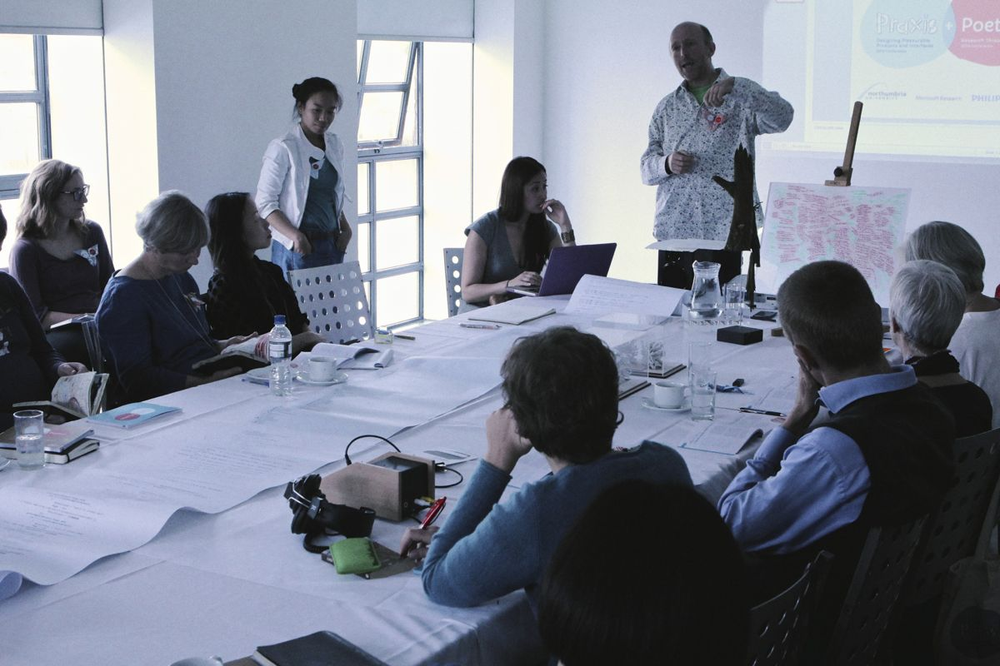
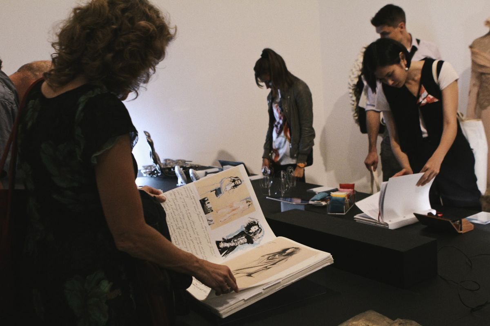
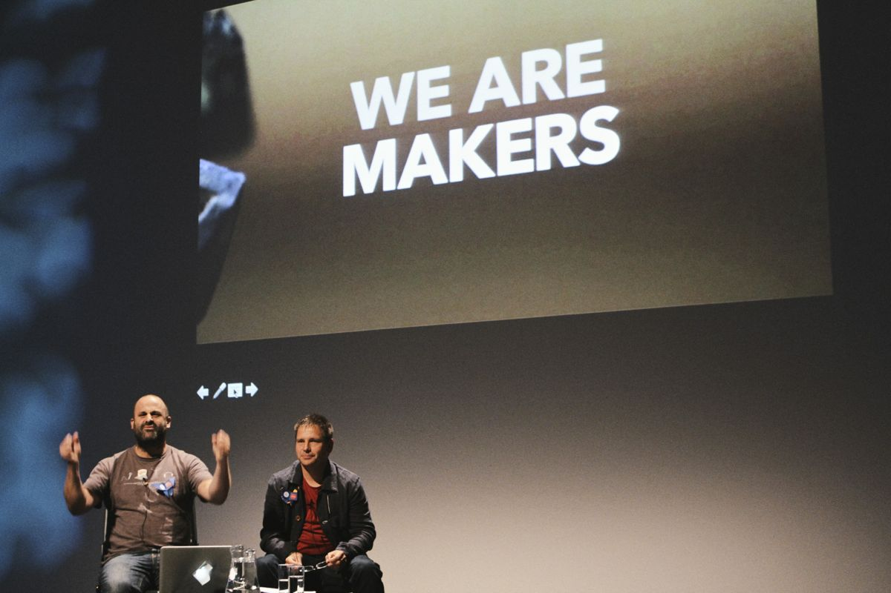

The inaugural Research Through Design (RTD) conference took place in September 2013 at the Baltic Centre for Contemporary Art in Gateshead, envisioned by founders Jayne Wallace and Joyce Yee as a new, experimental platform for disseminating practice-based design research. It responded to the observation that most conference opportunities are analogous with those of non-design centric disciplines, with the likelihood that key features and dynamics of design researchers’ work were being missed by these formats. Therefore, the first RTD conference resisted the temptation to adopt a traditional format for both paper submission and presentation in favour of an exhibition of design research artefacts accompanied by round-table discussions in ‘Rooms of Interest’.

Throughout the submission process and during the conference itself, practice was foregrounded and the artefact was placed centre stage. It was considered that having the artefact present in the exhibition, presentations and discussions would enable a more intimate connection to the topic and research. It was also recognised that some work might still be in progress and therefore the submission process was intentionally open to work in this state. The artefacts accepted for the conference were to be considered as intellectual tools – things to think through – acting as hypotheses or provocations – whether in terms of research process or outcome. Based on this idea, the first RTD conference welcomed work whereby the object was the conduit to intellectual discussions whether philosophical or practical. As such, the exhibition and artefacts were used as a platform to present or express outcomes of research, to demonstrate examples of research explorations, and to generate debate about the role of making in design research.

The chairs of the first RTD conference endeavoured to create a space that not only felt supportive to ‘research through design’, but also to reflective, inclusive discussions about the work. As a result, RTD was further envisioned to provide a platform for early career researchers with a practitioner background and to be an approachable forum for those design practitioners who may be relatively new to research.

With the second international biennial Research Through Design conference, we continue to embrace this ethos for establishing the novel, synergistic format of RTD that supports the dissemination of practice based design research. We hope you will be able to join us in the conversation at RTD 2015 in Cambridge, UK!